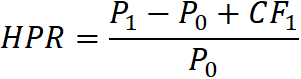
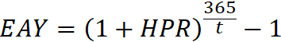
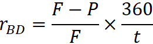
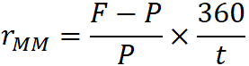
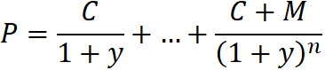
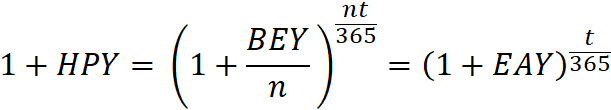
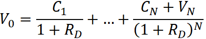
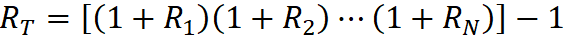

CFA Textbook
--------------------
Study Session 2 Quantitative Methods : Basic
Concepts
-------------------- --------------------
Reading 7 Discounted Cash Flow Applications
--------------------
Summary
- The net present value (NPV) of a project is the present value
of its cash inflows minus the present value of its cash outflows. The
internal rate of return (IRR) is the discount rate that makes NPV
equal to 0. We can interpret IRR as an expected compound return only
when all interim cash flows can be reinvested at the internal rate of
return and the investment is maintained to maturity.
- The NPV rule for decision making is to accept all projects
with positive NPV or, if projects are mutually exclusive, to accept
the project with the higher positive NPV. With mutually exclusive
projects, we rely on the NPV rule. The IRR rule is to accept all
projects with an internal rate of return exceeding the required rate
of return. The IRR rule can be affected by problems of scale and
timing of cash flows.
- Money-weighted rate of return and time-weighted rate of
return are two alternative methods for calculating portfolio returns
in a multiperiod setting when the portfolio is subject to additions
and withdrawals. Time-weighted rate of return is the standard in the
investment management industry. Money-weighted rate of return can be
appropriate if the investor exercises control over additions and
withdrawals to the portfolio.
- The money-weighted rate of return is the internal rate of
return on a portfolio, taking account of all cash flows.
- The time-weighted rate of return removes the effects of
timing and amount of withdrawals and additions to the portfolio and
reflects the compound rate of growth of one unit of currency invested
over a stated measurement period.
- The bank discount yield for US Treasury bills (and other
money-market instruments sold on a discount basis) is given by rBD =
(F − P0)/F × 360/t = D/F × 360/t, where F is the face amount to be
received at maturity, P0 is the price of the Treasury bill, t is the
number of days to maturity, and D is the dollar discount.
- For a stated holding period or horizon, holding period yield
(HPY) = (Ending price − Beginning price + Cash
distributions)/(Beginning price). For a US Treasury bill, HPY = D/P0.
- The effective annual yield (EAY) is (1 + HPY)^365/t − 1.
- The money market yield is given by rMM = HPY × 360/t, where t
is the number of days to maturity.
- For a Treasury bill, money market yield can be obtained from
the bank discount yield using rMM = (360 × rBD)/(360 − t × rBD).
- We can convert back and forth between holding period yields,
money market yields, and effective annual yields by using the holding
period yield, which is common to all the calculations.
- The bond equivalent yield of a yield stated on a semiannual
basis is that yield multiplied by 2.
中文手册整理
- 净现值 vs 内部收益率
- 净现值NPV = 现值-成本 = 投资项目总现金流的现值，NPV>0时可以接受项目
- 内部收益率 IRR，是令净现值为零的利率，IRR大于要求收益率时可以接受项目
- 互斥项目（mutually exclusive project），NPV和IRR结论矛盾时，用NPV结论
- 收益率
- 复利用365天作为一年，单利用360天作为一年
- 持有期收益率
- 有效年利率，年化收益率，复利年化收益率
- 银行贴现收益率，购买价格P，票面价格F，只有T-bill使用
- 货币市场收益率，购买价格P，票面价格F，单利年化收益率
- 债券等价收益率，bond equivalent yield，BEY，价格P，到期本金M，每期付息C
- 
- 货币加权收益率，特定形式的内部收益率
- 时间加权收益率，几何平均收益率
--------------------